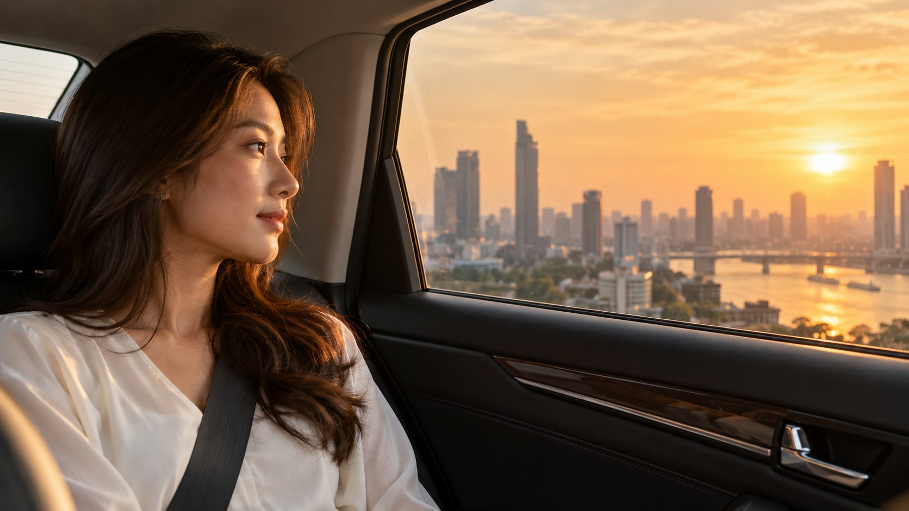
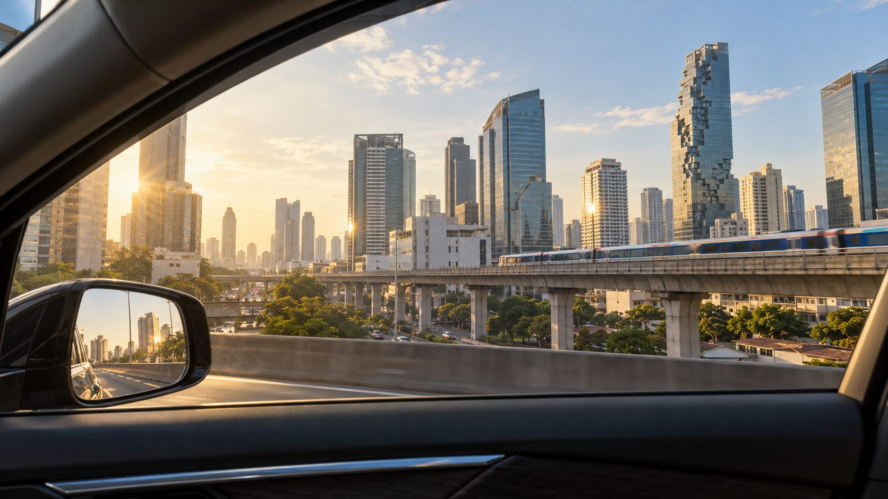

เริ่มต้นที่คนใช้รถ
ความต้องการของแต่ละคนต่างกัน เราจึงให้ความสำคัญกับการใช้งานประจำวัน ความชอบ และงบประมาณของคุณ

เข้าใจคน เข้าใจการเดินทาง
และสิ่งที่คุณต้องการจากฟิล์มรถยนต์
Beautifully Real.
FINNIX FILM · ภาพประกอบบรรยากาศ
ฟิล์มรถยนต์สำหรับชีวิตจริง
ที่เริ่มจากคนในรถเป็นสำคัญ
รถหนึ่งคันพาเราไปมากกว่าจุดหมาย ทั้งการไปทำงาน การกลับบ้าน และช่วงเวลาที่ได้อยู่กับคนสำคัญ สำหรับ FINNIX การเลือกฟิล์มจึงเริ่มจากคำถามง่าย ๆ ว่า คุณใช้ชีวิตบนรถแบบไหน
เราอยากให้คุณเลือกฟิล์มได้อย่างเข้าใจ ทั้งคุณสมบัติ เฉดสี และความเหมาะสมกับการใช้งาน เพื่อให้สิ่งที่เลือกมีคุณค่ากับทุกวันที่ใช้รถ
แนวคิดที่เราอยากส่งต่อ
ความต้องการของแต่ละคนต่างกัน เราจึงให้ความสำคัญกับการใช้งานประจำวัน ความชอบ และงบประมาณของคุณ
เราเชื่อว่าข้อมูลที่ชัดเจนช่วยให้ตัดสินใจได้ดีขึ้น ทั้งคุณสมบัติ ความแตกต่าง และข้อจำกัดของฟิล์มแต่ละรุ่น
ภาพและตัวเลขเป็นจุดเริ่มต้น ลองดูตัวอย่างฟิล์มและพูดคุยกับร้าน เพื่อหาทางเลือกที่เหมาะกับคุณก่อนตัดสินใจ
ผลิตภัณฑ์สำหรับรถยนต์ที่คุณเลือกได้ตามความต้องการ เริ่มจากสิ่งที่อยากดูแล แล้วค่อยเลือกรุ่นที่เหมาะสม
AUTOMOTIVE WINDOW FILM
สำรวจซีรีส์และเฉดสี พร้อมข้อมูลผลิตภัณฑ์ เพื่อเลือกฟิล์มให้สอดคล้องกับการใช้รถของคุณ
สำรวจฟิล์มทุกซีรีส์PAINT PROTECTION FILM
สอบถามตัวเลือกฟิล์มใสกันรอย รายละเอียดผลิตภัณฑ์ และแนวทางการติดตั้งที่เหมาะกับรถของคุณ
สอบถามข้อมูลผลิตภัณฑ์
เริ่มจากดูสีฟิล์ม อ่านข้อมูลซีรีส์ที่สนใจ แล้วให้ร้านช่วยแนะนำจากรถและการใช้งานของคุณ เพราะการเลือกที่เหมาะสมควรมีทั้งข้อมูลและประสบการณ์จริงประกอบกัน
รู้จักการลอง FINNIX สอบถามร้านที่มีจุดทดลองอยากรู้จักผลิตภัณฑ์ สอบถามร้านติดตั้ง หรือพูดคุยเรื่องธุรกิจ ติดต่อเราได้โดยตรง